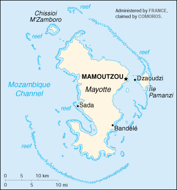

(territorial collectivity of France)
|
Mayotte (territorial collectivity of France) |
|
| Introduction Geography People Government Economy Communications Transportation Military Transnational Issues | ||
|  | ||
| Mayotte | Introduction | Top of Page |
| Background: | Mayotte was ceded to France along with the other Comoros in 1843. It was the only island in the archipelago that voted in 1974 to retain its link with France and forgo independence. |
| Mayotte | Geography | Top of Page |
| Location: | Southern Africa, island in the Mozambique Channel, about one-half of the way from northern Madagascar to northern Mozambique |
| Geographic coordinates: | 12 50 S, 45 10 E |
| Map references: | Africa |
| Area: |
total:
374 sq km
land: 374 sq km water: 0 sq km |
| Area - comparative: | slightly more than twice the size of Washington, DC |
| Land boundaries: | 0 km |
| Coastline: | 185.2 km |
| Maritime claims: |
exclusive economic zone:
200 NM
territorial sea: 12 NM |
| Climate: | tropical; marine; hot, humid, rainy season during northeastern monsoon (November to May); dry season is cooler (May to November) |
| Terrain: | generally undulating, with deep ravines and ancient volcanic peaks |
| Elevation extremes: |
lowest point:
Indian Ocean 0 m
highest point: Benara 660 m |
| Natural resources: | NEGL |
| Land use: |
arable land:
NA%
permanent crops: NA% permanent pastures: NA% forests and woodland: NA% other: NA% |
| Irrigated land: | NA sq km |
| Natural hazards: | cyclones during rainy season |
| Environment - current issues: | NA |
| Geography - note: | part of Comoro Archipelago; 18 islands |
| Mayotte | People | Top of Page |
| Population: | 163,366 (July 2001 est.) |
| Age structure: |
0-14 years:
46.59% (male 38,188; female 37,920)
15-64 years: 51.73% (male 46,132; female 38,378) 65 years and over: 1.68% (male 1,361; female 1,387) (2001 est.) |
| Population growth rate: | 4.58% (2001 est.) |
| Birth rate: | 44.39 births/1,000 population (2001 est.) |
| Death rate: | 8.84 deaths/1,000 population (2001 est.) |
| Net migration rate: | 10.28 migrant(s)/1,000 population (2001 est.) |
| Sex ratio: |
at birth:
1.03 male(s)/female
under 15 years: 1.01 male(s)/female 15-64 years: 1.2 male(s)/female 65 years and over: 0.98 male(s)/female total population: 1.1 male(s)/female (2001 est.) |
| Infant mortality rate: | 69.54 deaths/1,000 live births (2001 est.) |
| Life expectancy at birth: |
total population:
59.83 years
male: 57.77 years female: 61.96 years (2001 est.) |
| Total fertility rate: | 6.24 children born/woman (2001 est.) |
| HIV/AIDS - adult prevalence rate: | NA% |
| HIV/AIDS - people living with HIV/AIDS: | NA |
| HIV/AIDS - deaths: | NA |
| Nationality: |
noun:
Mahorais (singular and plural)
adjective: Mahoran |
| Ethnic groups: | NA |
| Religions: | Muslim 97%, Christian (mostly Roman Catholic) |
| Languages: | Mahorian (a Swahili dialect), French (official language) spoken by 35% of the population |
| Literacy: |
definition:
NA
total population: NA% male: NA% female: NA% |
| Mayotte | Government | Top of Page |
| Country name: |
conventional long form:
Territorial Collectivity of Mayotte
conventional short form: Mayotte |
| Dependency status: | territorial collectivity of France |
| Government type: | NA |
| Capital: | Mamoutzou |
| Administrative divisions: | none (territorial collectivity of France) |
| Independence: | none (territorial collectivity of France) |
| National holiday: | Bastille Day, 14 July (1789) |
| Constitution: | 28 September 1958 (French Constitution) |
| Legal system: | French law |
| Suffrage: | 18 years of age; universal |
| Executive branch: |
chief of state:
President Jacques CHIRAC of France (since 17 May 1995), represented by Prefect Pierre BAYLE (since 15 July 1998)
head of government: President of the General Council Younoussa BAMANA (since NA 1977) cabinet: NA elections: French president elected by popular vote for a seven-year term; prefect appointed by the French president on the advice of the French Ministry of the Interior; president of the General Council elected by the members of the General Council for a six-year term |
| Legislative branch: |
unicameral General Council or Conseil General (19 seats; members are elected by popular vote to serve three-year terms)
elections: last held 7 October 2000 (next to be held NA 2003) election results: percent of vote by party - NA%; seats by party - NA note: Mayotte elects one member of the French Senate; elections last held 24 September 1995 (next to be held 24 September 2001); results - percent of vote by party - NA%; seats by party - MPM 1; Mayotte also elects one member to the French National Assembly; elections last held 25 May and 1 June 1997 (next to be held as a special election on NA May 2002); results - percent of vote by party - UDF/FD 51.7%, RPR 48.3%; seats by party - UDF/FD 1 |
| Judicial branch: | Supreme Court or Tribunal Superieur d'Appel |
| Political parties and leaders: | Democratic Front or FD [Youssouf MOUSSA]; Mahoran Popular Movement or MPM [Younoussa BAMANA]; Mahoran Rally for the Republic or RPR [Mansour KAMARDINE]; Movement for Department Status Mayotte or MDM [Henri JEAN-BAPTISTE]; Socialist Party or PS (local branch of French Parti Socialiste) [Ibrahim ABUBACAR]; Union for French Democracy or UDF [Henri JEAN-BAPTISTE] |
| Political pressure groups and leaders: | NA |
| International organization participation: | FZ |
| Diplomatic representation in the US: | none (territorial collectivity of France) |
| Diplomatic representation from the US: | none (territorial collectivity of France) |
| Flag description: | the flag of France is used |
| Mayotte | Economy | Top of Page |
| Economy - overview: | Economic activity is based primarily on the agricultural sector, including fishing and livestock raising. Mayotte is not self-sufficient and must import a large portion of its food requirements, mainly from France. The economy and future development of the island are heavily dependent on French financial assistance, an important supplement to GDP. Mayotte's remote location is an obstacle to the development of tourism. |
| GDP: | purchasing power parity - $85 million (1998 est.) |
| GDP - real growth rate: | NA% |
| GDP - per capita: | purchasing power parity - $600 (1998 est.) |
| GDP - composition by sector: |
agriculture:
NA%
industry: NA% services: NA% |
| Population below poverty line: | NA% |
| Household income or consumption by percentage share: |
lowest 10%:
NA%
highest 10%: NA% |
| Inflation rate (consumer prices): | NA% |
| Labor force: | NA |
| Unemployment rate: | 45% (1997) |
| Budget: |
revenues:
$NA
expenditures: $73 million, including capital expenditures of $NA (1991 est.) |
| Industries: | newly created lobster and shrimp industry, construction |
| Industrial production growth rate: | NA% |
| Electricity - production: | NA kWh |
| Electricity - production by source: |
fossil fuel:
NA%
hydro: NA% nuclear: NA% other: NA% |
| Electricity - consumption: | NA kWh |
| Agriculture - products: | vanilla, ylang-ylang (perfume essence), coffee, copra |
| Exports: | $3.44 million (f.o.b., 1997) |
| Exports - commodities: | ylang-ylang (perfume essence), vanilla, copra, coconuts, coffee, cinnamon |
| Exports - partners: | France 80%, Comoros 15%, Reunion |
| Imports: | $141.3 million (f.o.b., 1997) |
| Imports - commodities: | food, machinery and equipment, transportation equipment, metals, chemicals |
| Imports - partners: | France 66%, Africa 14%, Southeast Asia 11% (1997) |
| Debt - external: | $NA |
| Economic aid - recipient: | $107.7 million (1995); note - extensive French financial assistance |
| Currency: | French franc (FRF); euro (EUR) |
| Currency code: | FRF; EUR |
| Exchange rates: | euros per US dollar - 1.0659 (January 2001), 1.0854 (2000), 0.9386 (1999); French francs per US dollar - 5.8995 (1998), 5.8367 (1997), 5.1155 (1996) |
| Fiscal year: | calendar year |
| Mayotte | Communications | Top of Page |
| Telephones - main lines in use: | 9,314 (1997) |
| Telephones - mobile cellular: | 0 (2000) |
| Telephone system: |
general assessment:
small system administered by French Department of Posts and Telecommunications
domestic: NA international: microwave radio relay and HF radiotelephone communications to Comoros and other international connections |
| Radio broadcast stations: | AM 1, FM 4, shortwave 0 (1998) |
| Radios: | NA |
| Television broadcast stations: | 3 (1997) |
| Televisions: | 3,500 (1994) |
| Internet country code: | .yt |
| Internet Service Providers (ISPs): | NA |
| Internet users: | NA |
| Mayotte | Transportation | Top of Page |
| Railways: | 0 km |
| Highways: |
total:
93 km
paved: 72 km unpaved: 21 km |
| Waterways: | none |
| Ports and harbors: | Dzaoudzi |
| Merchant marine: | none (2000 est.) |
| Airports: | 1 (2000 est.) |
| Airports - with paved runways: |
total:
1
1,524 to 2,437 m: 1 (2000 est.) |
| Mayotte | Military | Top of Page |
| Military - note: | defense is the responsibility of France; small contingent of French forces stationed on the island |
| Mayotte | Transnational Issues | Top of Page |
| Disputes - international: | claimed by Comoros |
{kind=link}
{kind=link}